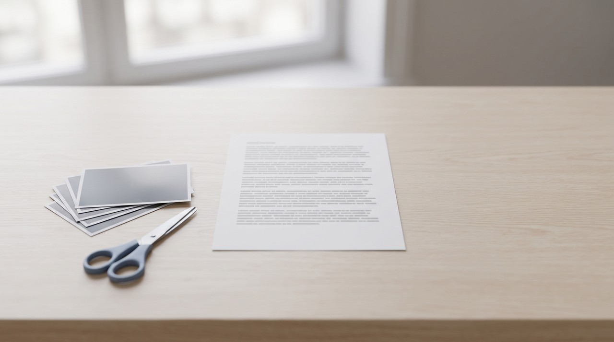
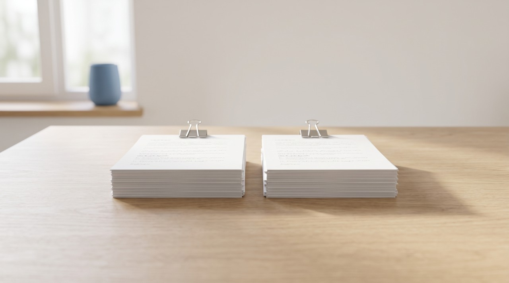

How to give Claude a long video without losing what was on screen
You need to turn the video into a document first, because Claude does not take video files. The words are the easy part. A 3 hour video I measured came to 29,250 words, and paid Claude chats hold 200,000 to 1 million tokens. The pictures are the hard part. On claude.ai, Claude only reads the images in a PDF of 100 pages or fewer. You should keep every word and cut or split the pictures first.
You might have a long recording like a three hour course, a full day webinar or a live stream, and you want Claude to answer questions about it. People usually worry about the length. The spoken words almost always fit fine. The pictures are what break the system, and on claude.ai they break at page 100 of the PDF.
I will give a bit of background first. Claude does not accept video files, so it cannot watch a video of any length. It reads text, still images and documents. A long video has to become a document first. That document is the transcript of what was said and pictures of what was on screen. Claude measures that document in tokens, which are small pieces of words. The most tokens it can hold in one chat is called its context window, and you can think of it as the chat's working memory.
How much of a 3 hour video can Claude actually hold?
I did not want to guess, so I used a real video. In June I ran a 3 hour 3 minute coding tutorial from YouTube through VideoDoc on its Smart setting. The video had captions, so VideoDoc used them instead of listening to the audio. The whole job took about 16 and a half minutes on my PC, and this is what came out.
| What came out | Amount | What it costs Claude |
|---|---|---|
| Spoken words in the transcript | 29,250 | Roughly 40,000 tokens |
| Pictures of the screen, 960 by 540 | 123 | 700 tokens each, 86,100 in total |
| The same 123 pictures at Best quality, 1440 by 810 (worked out, not run) | 123 | 1,508 tokens each, 185,484 in total |
| The finished PDF | 94 pages, 5.9 MB | Just under the 100 page line on claude.ai |
Now compare that with the window. Claude's help center says that on paid plans, Opus 5, Sonnet 5 and Fable 5.1 hold 1 million tokens in a chat. Opus 4.6 to 4.8 and Sonnet 4.6 hold 500,000, and the other models hold 200,000 (Anthropic's context window page). Roughly 40,000 tokens is about a fifth of the smallest of those. So the words of a 3 hour video fit in one Claude chat, whole.
The pictures are a different story. Anthropic's vision guide explains that Claude cuts every image into squares of 28 by 28 pixels, and each square costs one token. A 960 by 540 picture is 35 squares across and 20 down, so it costs 700 tokens. On this video that is about as much as three minutes of talking, for just one picture. That is why the 123 pictures cost more than twice what all 29,250 words cost, and more than four times as much at Best quality.
Why does Claude ignore the pictures in a long PDF?
On claude.ai you cannot drop 123 loose pictures into a chat anyway. A message takes at most 20 images, and a chat takes at most 20 files. The easy way to hand over a long video's pictures is to make one PDF. That way the pictures sit next to the words they belong to.
But there is a limit. Claude's help center says it looks at both the text and the images in a PDF of 100 pages or fewer. For a PDF of 101 to 1,000 pages it reads the text only (Upload files to Claude). A 101 page PDF of your lecture is read as words alone. The slides, the diagrams and the lines of code on screen are skipped. Claude still answers your questions, but it only uses the words to do it.
My 3 hour video on Smart came to 94 pages, so it only just made it under the limit. VideoDoc's Detailed setting keeps up to 320 pictures. That is 197 more than this run, and those pictures alone would push the same video far past 100 pages. A video much longer than 3 hours can cross the line on Smart too. Before you upload a long PDF, check the page count. If it is over 100, split it.
What should you cut first when a long video is too big?

The rule I follow is simple. Keep the words and cut the pictures. The words are cheap and they carry most of what a talk says. The pictures are expensive, and on a long video a lot of them are near repeats of the same slide or the same code editor.
Making it fit is not the whole goal. Anthropic's own context window guide says that as the token count grows, accuracy and recall go down. The guide calls this context rot. Even in a 1 million token chat, a leaner document gets better answers than a stuffed one.
| VideoDoc setting | Most pictures kept | Pictures at least this far apart | Good for a long video that is |
|---|---|---|---|
| Text only | 0 | No pictures | Pure talk, like a podcast or an interview |
| Minimal | 40 | 30 seconds | Mostly talk, with a few slides |
| Smart | 160 | 8 seconds | A normal lecture or tutorial |
| Detailed | 320 | 4 seconds | Screen heavy, and then usually split |
- Pick the lightest picture setting that still shows what matters. Minimal or Text only is enough for a talk heavy video.
- Use Best quality only when the screen has small text. Best saves pictures 1440 wide, and that costs more than twice as much per picture. You should keep it for code, spreadsheets and dense slides.
- Delete the pages nobody needs. You can take out the intro, the sponsor break, the small talk before questions and the goodbye. Every line keeps its timestamp, so Claude can still point you to the exact minute.
- Split last, not first. Splitting works well, but a document that fits in one piece is easier to work with and ask questions of.
How do you split a long video for Claude?

Split the document, not the video. If you cut the video into three files first, each part starts again at 0:00. Claude can no longer tell you that something happened at 2:14:05 of the full recording. One document for the whole video keeps every timestamp true.
- Make one document for the whole video in VideoDoc, with the picture setting from the table above.
- Open the PDF and look at the page count. At 100 pages or fewer, upload it as it is.
- Over 100, save it again in parts of up to 100 pages, cutting at a natural break like a new chapter or topic. On Windows, open the PDF in your browser, print it to Microsoft Print to PDF and set a page range. On a Mac, use Save as PDF from Preview's print window.
- Upload the parts to the same chat, then ask your question. Anthropic's vision guide says Claude does best when the images come first and the question after them, so put the files in before you type.
- If you only need the words, skip all of this and upload the plain transcript.txt file VideoDoc saves next to the PDF.
VideoDoc does not split a long PDF for you. It makes one document per video, and you split it with a PDF tool like I mentioned above. My numbers come from one real 3 hour video. The 40,000 token figure is an estimate, because every model counts words a little differently. The picture costs use Anthropic's published formula for images. A PDF is turned into one picture per page on Anthropic's side, so I cannot promise the exact total for a whole PDF. Anthropic's token counting tool gives the real number if you need it. A video link only works for public videos, and a file on your own computer always works.
Try it on the long video you keep putting off.
VideoDoc turns it into a PDF and a Markdown file on your own computer, with the transcript and the screen, and you choose how many pictures go in. Free in your browser for your own files, and Pro is one payment with no subscription.
I used a few sources for this. They are the Claude Help Center pages called Upload files to Claude and How large is the context window on paid Claude plans. I also used Anthropic's Vision and Context windows guides, and my own VideoDoc run on a 3 hour 3 minute YouTube tutorial.
Quick questions
Can Claude watch a 3 hour video?
No. Claude does not take video files, so it cannot watch a video of any length. You need to turn the video into a document with the transcript and the pictures of the screen. Then Claude can read all of it.
How many tokens is a 3 hour video transcript?
The 3 hour video I measured had 29,250 spoken words, which is roughly 40,000 tokens. That fits inside a 200,000 token chat with plenty of room. It fits even more easily inside the 500,000 and 1 million token windows of newer models.
Why is Claude ignoring the images in my PDF?
On claude.ai, Claude only reads the images in a PDF of 100 pages or fewer. From 101 up to 1,000 pages it reads the text only. You can split a long PDF into parts of 100 pages or less, and the pictures are read again.
Should I split a long video before giving it to Claude?
You should split the document, not the video. Make one document for the whole video so every timestamp stays true to the full recording. Then cut the PDF into parts of up to 100 pages if it is longer than that.
You should take the longest video on your list and make one document from it. Look at the page count before you upload anything.

I am a telecom engineer and business analyst from Pakistan, and I build small honest desktop tools under Designesh. I made VideoDoc because I wanted my AI to read the lectures I study from. Everything here is tested on my own machine first.